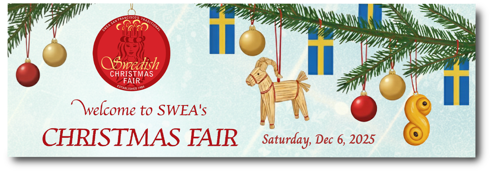

The SWEA Christmas Fair is one of the organization's largest annual community events, bringing together vendors, volunteers, and visitors for a celebration of Swedish culture, food, crafts, and traditions. As Graphic Designer for the Swedish Women's Educational Association (SWEA), I developed a comprehensive visual communication system for the organization's annual Christmas Fair. The project involved creating promotional and informational designs spanning print, digital, and event signage applications. Working closely with event organizers, I translated a large volume of information into cohesive, accessible, and visually engaging materials that supported both visitors and vendors throughout the event.
